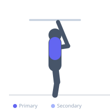

Exercise guide / Scapular Pull-Up
Scapular Pull-Up
The scapular pull-up is an isolation drill performed at the top of a dead hang, where the shoulder blades are actively depressed and retracted without bending the elbows. It trains the serratus anterior, lower trapezius, and latissimus dorsi to control scapular positioning — a foundational movement for shoulder health and progression to full pull-ups.
Primary muscles
latissimus dorsi
trapezius lower
Secondary muscles
rhomboid major
Stabilizers
erector spinae
Equipment
Smith Machine


Starting position
- Hang from a pull-up bar with a shoulder-width overhand grip. Arms fully extended, body relaxed in a dead hang.
Setup
- Use a bar at a height that allows full arm extension with feet off the floor. Adjust grip width to shoulder width.
Steps
- Step 1: Begin in a dead hang with arms fully extended.
- Step 2: Without bending the elbows, actively depress and retract the shoulder blades, elevating the body 2-5 cm.
- Step 3: Hold the depressed position for 1-2 seconds, feeling the lats engage.
- Step 4: Slowly allow the shoulder blades to elevate back to the resting dead-hang position.
- Step 5: Repeat for the desired number of repetitions.
Coaching cues
- Think 'put your shoulder blades in your back pockets'
- Squeeze the lats without bending the arms
- Chest stays open throughout
Breathing
- Exhale as you depress the scapulae. Inhale as you return to the dead hang.
Range of motion
- Shoulder blades travel from fully elevated dead hang to maximally depressed and retracted — typically 2-5 cm of body elevation.
Tempo
- 1-2-1-0 (1s up, 2s hold, 1s down)
Common mistakes
- Bending the elbows — this becomes a partial pull-up rather than a scapular drill
- Shrugging the traps upward instead of depressing downward
- Moving too quickly — the drill is about motor control, not speed
Safety
- Avoid this exercise with active rotator cuff or labral injuries until cleared by a clinician
- Warm up wrists and shoulders before hanging
Training
- strength: 8–15 reps
- rehabilitation: 10–20 reps
- strength: 3–4 sets
- Rest: {'strength': 60, 'rehabilitation': 60}